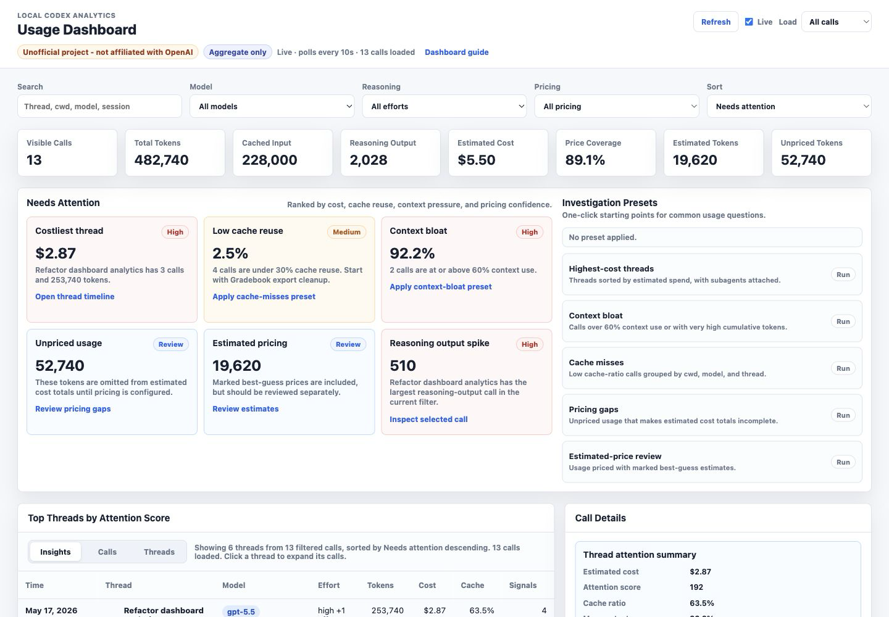
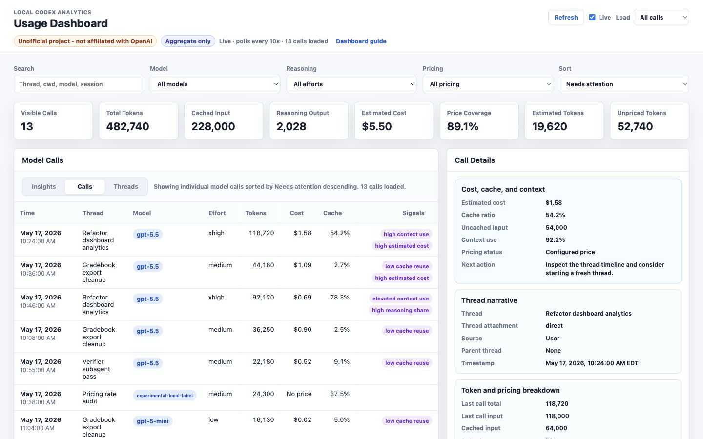
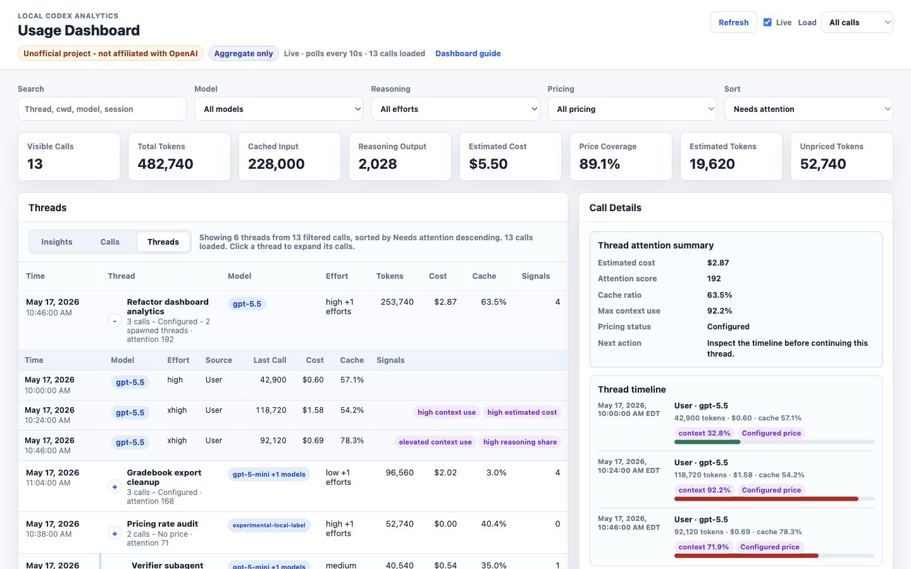
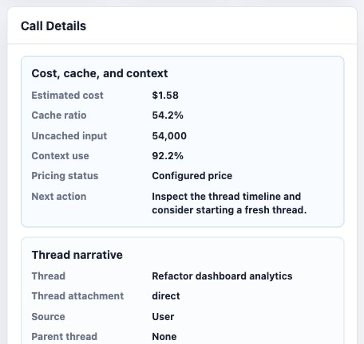

Dashboard Guide
Unofficial project: Codex Usage Tracker is independent and is not made by, affiliated with, endorsed by, sponsored by, or supported by OpenAI. OpenAI and Codex are trademarks of OpenAI.
This local guide uses synthetic screenshots and does not contain prompts, assistant text, tool output, or real Codex session content.
Open The Dashboard
For the best experience, run the localhost dashboard server:
codex-usage-tracker update-pricing
codex-usage-tracker serve-dashboard --openThe server enables live aggregate refresh and on-demand context loading. Static file mode can still filter, sort, and inspect aggregate fields, but cannot refresh logs or load context.
Insights View

The dashboard opens in Insights view. It ranks costly threads, low cache reuse, context bloat, unpriced usage, estimated pricing, and reasoning-output spikes from aggregate fields only.
Needs Attentioncards pair each signal with a next action.Investigation Presetsapply a view, derived filter, sort order, and explanatory caption together.- Presets include highest-cost threads, context bloat, cache misses, pricing gaps, and estimated-price review.
Calls View

Use Calls view to inspect individual model calls. Sort by attention, time, thread, model, tokens, cost, cache, context, or signals. Hover or click a row to pin grouped aggregate fields in Call Details.
Last call totalis the selected model call.Session cumulativeis the running total Codex logged for that session.Cached inputandUncached inputmake cache behavior visible without storing transcript text.- A cost with
*means the pricing row is a marked best-guess estimate. - Raw aggregate identifiers and source file metadata are collapsed until you need them.
Threads View

Use Threads view to understand a work session as a group. Expand a thread to see calls oldest to newest. Subagents with logged parent session ids are shown under their parent thread; inferred auto-review attachments are marked in the details panel. Selected threads also show a compact timeline with cost, cache, context, pricing, and relationship cues.
Details And Context

The details panel shows primary cost, cache, context, pricing, and next-action signals first. It then groups thread narrative, token/pricing breakdowns, collapsed raw identifiers, and source metadata. When served from localhost, Load context fetches one redacted, size-limited source excerpt on demand.
Investigating Long Chat Growth
Prompt caching helps, but cached input is not free. Long-running chats can carry a large cached prefix into later turns, so usage can climb quickly even when the visible request looks small.
Watch Cached input, Uncached input, Session cumulative, Context use, and Cache ratio together. When old context is no longer useful, starting a fresh Codex thread may be more efficient than carrying a large cached history forward.
Privacy Model
The dashboard includes session ids, thread names, cwd values, source file paths, timestamps, model labels, reasoning effort, token counts, costs, and derived ratios. It does not include prompts, assistant responses, raw tool output, pasted secrets, message snippets, or transcript text.